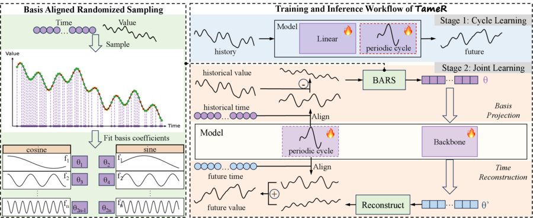
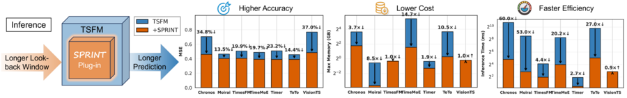
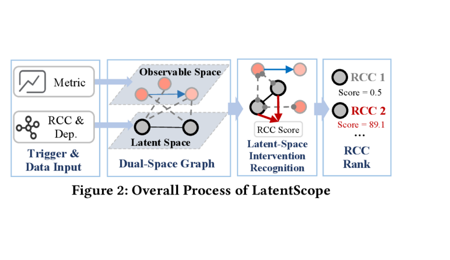
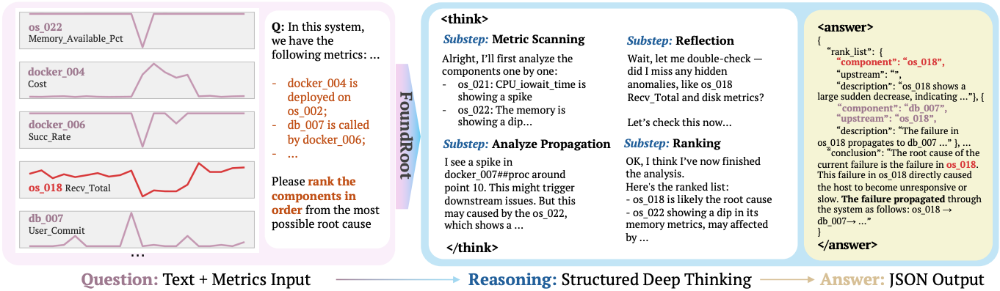
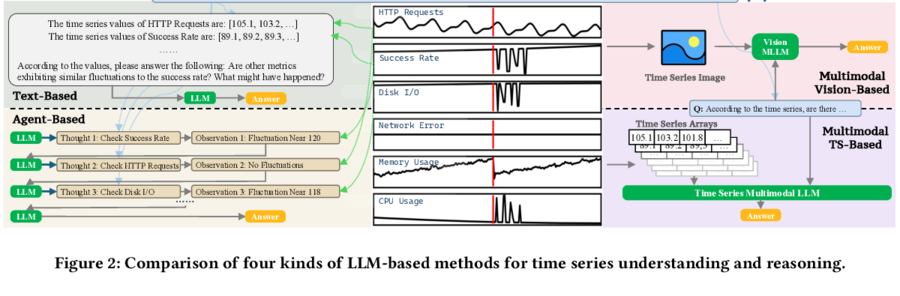
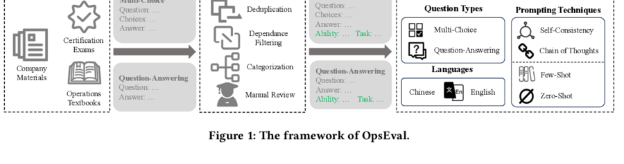
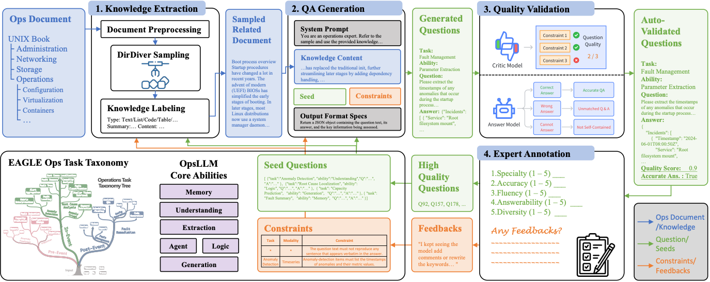
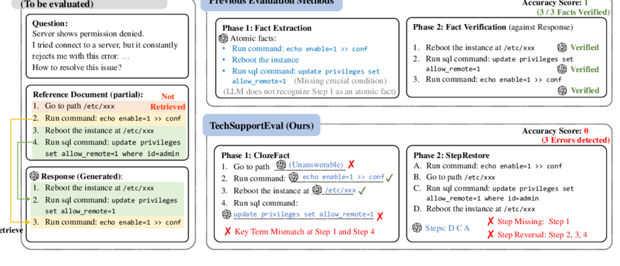
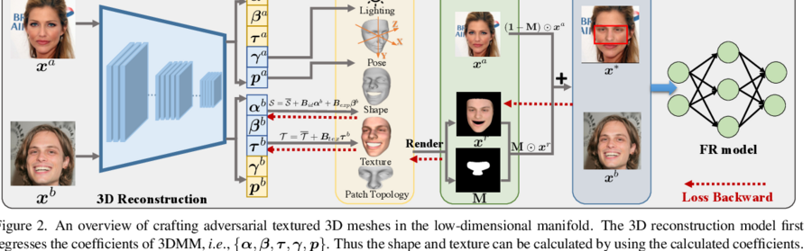
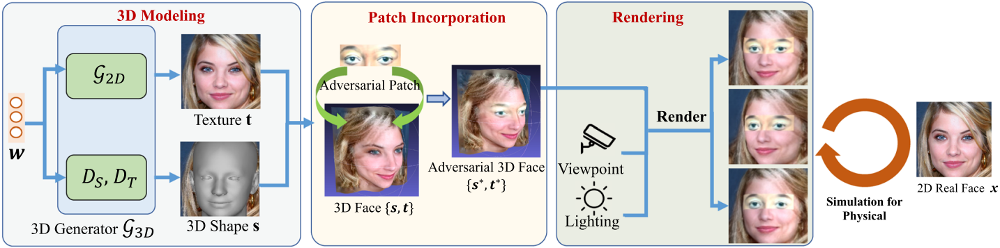

LLM 后训练与推理
研究大语言模型如何对齐用户意图、理解长序列、使用工具，并基于多模态证据进行推理。
查看相关工作 →我是清华大学计算机科学与技术系博士生，所在实验室为 NetMan Lab，导师为 裴丹教授。我的研究位于多模态大语言模型、后训练、对齐与推理，以及大语言模型在智能运维中的应用之间。
我近期关注实际数据场景中的大语言模型后训练与推理：对齐模型行为与人类意图，通过多模态感知和工具使用提升长序列数值理解能力，并构建面向垂直领域大语言模型的可靠评测方法。
我于 2023 年获得清华大学计算机科学与技术学士学位，曾在字节跳动、华为、中兴、eBay 和瑞莱智慧进行算法研究实习，产出两篇 ICML 2026 第一作者论文，以及多项围绕大语言模型后训练、多模态推理和故障诊断的第一作者工作。
构建能够理解多模态证据、对齐人类意图并支撑实际决策的大语言模型系统。
近期研究进展与论文录用。
完整列表见 Google Scholar。

研究方向可靠预测与故障诊断
指出最近数据偏置是时序预测鲁棒性的关键瓶颈，并通过全局上下文建模缓解该问题。

研究方向可靠预测与故障诊断
提出无需训练的推理时扩展框架，提升 19% 预测精度，并降低 6.4x 峰值显存和 16.9x 推理时间。


研究方向LLM 后训练与推理
构建面向故障根因定位的大语言模型基础推理模型，引入结构化深度思考，并已在线部署。

研究方向LLM 后训练与推理
将时间序列作为大语言模型的一等模态，支持数值问答与推理任务。





围绕大语言模型、智能运维、时间序列建模和故障诊断的工业研究经历。
算法工程师。研究大语言模型后训练、多模态推理、推理时增强和多轮推理评测。产出：第一作者论文 TameR 与 SPRINT（ICML 2026，CCF A）；两项围绕大语言模型后训练与多模态推理的第一作者进行中工作；相关意图对齐异常检测方向已在内部智能告警流程中验证。
算法工程师。研究光传输网络时空模型 OTN-STFM，结合指标、告警与拓扑进行异常检测和根因定位。产出：内部验证的光网络故障定位模型，并已在内部骨干网系统故障定位任务上进行实际验证。
算法工程师。构建网络运维领域大模型问答数据、文档驱动基准生成和自动化问答评估流程。产出：共同作者论文 OpsEval（FSE 2025，CCF A）、Eagle（FSE 2026，CCF A）与 TechSupportEval（IJCNN 2025，THU B，CCF C）；相关评测用于内部实际大语言模型的开发评估。
算法工程师。在隐空间中建模复杂系统指标间因果关系，并通过干预识别进行根因定位。产出：共同作者论文 LatentScope（KDD 2024，CCF A）与内部工程验证。
算法工程师。研究面向人脸识别的鲁棒物理对抗攻击，包括对抗性纹理 3D 网格和 3D 补丁优化。产出：共同作者论文 AT3D（CVPR 2023，CCF A，Highlight）与 Face3DAdv（IJCV 2025，CCF A）。
部分奖项与荣誉。